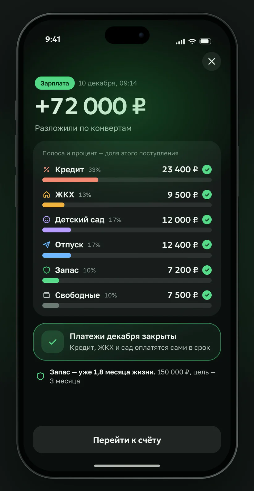

Запись прототипа: от уведомления о зарплате до прогноза цели.
Клиент ничего не переводит руками.

1
Уведомление: 72 000 ₽ раскладываются.
2
Шесть конвертов пополнены, у каждого видна доля поступления.
3
300 000 ₽, запаса хватит на 1,8 месяца жизни.
4
Максим внёс 6 000 ₽ на отпуск.
5
Цель будет готова 1 июня.
Запись прототипа версии 2, 21 секунда, идёт по кругу. Открыть кликабельный прототип